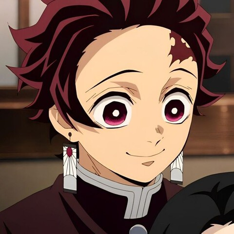
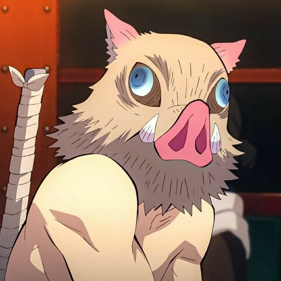
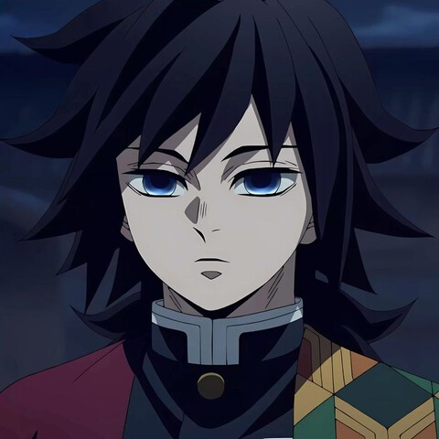
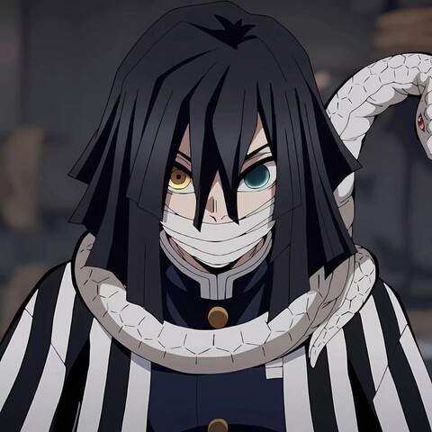
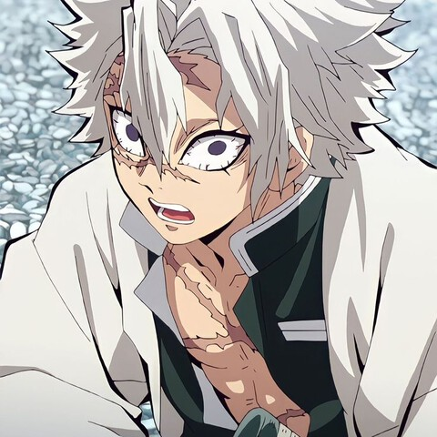
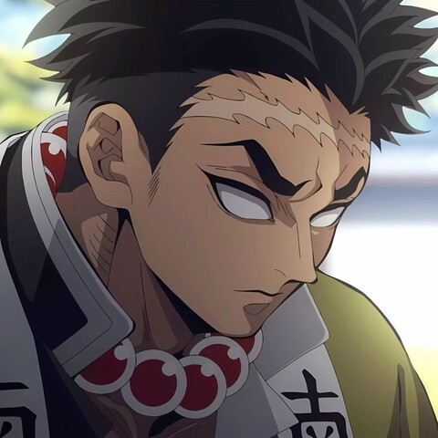
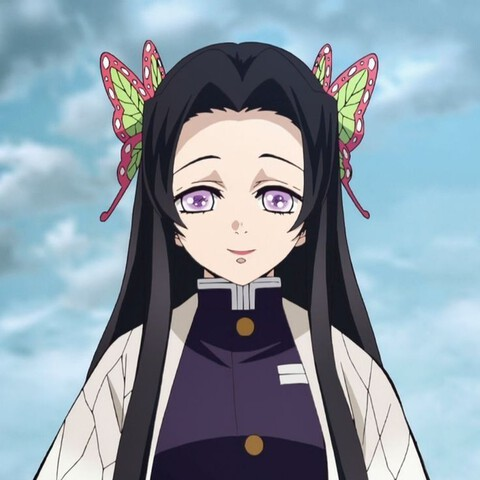
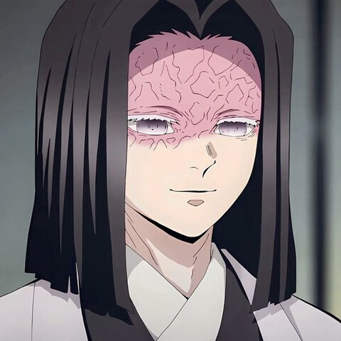
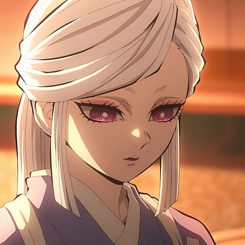

In Taisho-era Japan, Tanjiro Kamado is a kindhearted boy who makes a living selling charcoal. However, his peaceful life is shattered when a Demon slaughters his entire family. His little sister Nezuko is the only survivor, but she has been transformed into a Demon herself! Tanjiro sets out on a dangerous journey to find a way to return his sister to normal and destroy the Demon who ruined his life.









ALL CREDITS TO KOYOHARU GOTOUGE THE WRITER AND
ILLUSTRATOR OF DEMON SLAYER: KIMETSU NO YAIBA - MANGA
WEBSITE DEVELOPED AND DESIGNED BY CHYLE YVONNE A. FLORES